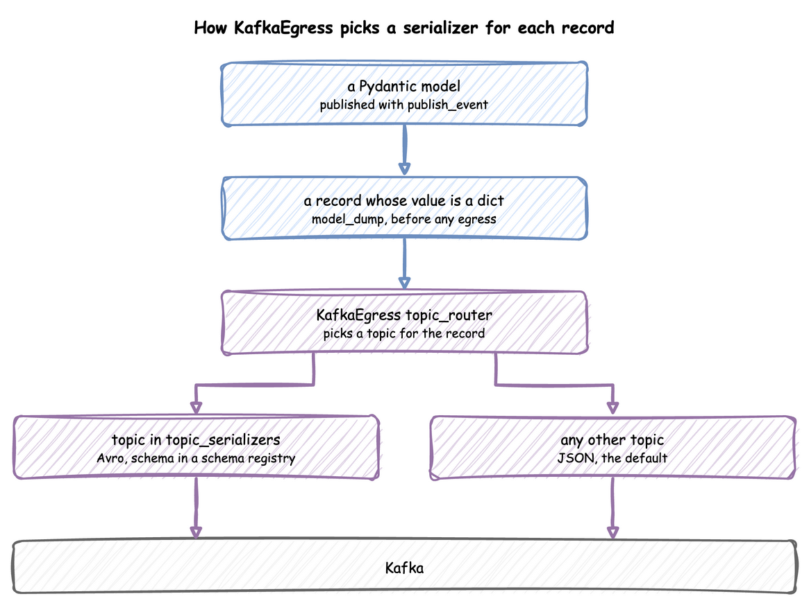

KafkaEgress writes every record as JSON by default. That suits lifecycle events and telemetry, but a consumer that needs a compact, schema-checked format, such as a machine learning service reading predictions, can read Avro instead.
Each topic can have its own serializer, so JSON and Avro topics share one producer. A Pydantic model can be published as it is.
The code publishes to Kafka, so start a broker first with odctl up kafka-lite. See Installation for the one-time odctl install. Stop it with odctl down kafka-lite --volumes.
The models need dataclasses-avroschema with its Pydantic support, in every form: pip install "dataclasses-avroschema[pydantic]".
Each serializer needs its extra: pip install "desflow[confluent]" for the Confluent Schema Registry, or pip install "desflow[glue]" for the AWS Glue Schema Registry. Both include kafka.
Steps
Publish a Pydantic Model
publish_event turns a Pydantic V2 model into a JSON-ready dict before any egress sees it, so you do not convert it yourself. Pydantic V1 models, including pydantic.v1, are not supported and raise a PydanticSerializationError. A task publishes a model as its finished event in every form. MLPrediction is the model that Generate the Schema from the Model defines:
defprediction(task_id,context,entity):"""The finished event of a packed order: a prediction, published as the model."""returnMLPrediction(task_id=entity.key,confidence=0.9)
The blueprint names it as the task's payload, as Run the Shop shows.
@app.task(service_id="packing",resource_id="packers")defpack_order(task_id:int,entity):# The finished event is a prediction for the order, published as the modelreturnMLPrediction(task_id=entity.key,confidence=0.9)
publish_event takes the model as the value, in the last two lines of pack_order:
defpack_order(env,packers,sampler,key,task_id):path_id="Shop.service.packing"env.publish_event(key,{"path_id":path_id,"status":"queued"},"pack_order",task_id)withpackers.request()asunit:yieldunitenv.publish_event(key,{"path_id":path_id,"status":"started"},"pack_order",task_id)yieldenv.timeout(sampler.sample(env.registry.get_config(path_id)))# The finished event is a prediction for the order, published as the model;# publish_event turns it into a dictprediction=MLPrediction(task_id=key,confidence=0.9)env.publish_event(key,prediction,"pack_order",task_id)
Avro for Some Topics
From here on, the code is the same for every form. A topic router picks the topic of each record, and topic_serializers names the serializer of each topic. A topic with no serializer in the mapping uses the default, JsonSerializer.

KafkaEgress serializes the whole record, not only its value: key, task, instance, sim_ts, timestamp and value, without stream_type. task and instance are null on an event published without them, so the schema makes both nullable. An Avro schema therefore describes that record, with your payload as the value field. ConfluentAvroSerializer uses a Confluent Schema Registry, and GlueAvroSerializer uses an AWS Glue Schema Registry.
fromdesflowimportKafkaEgressfromdesflow.connectors.egress.kafkaimportConfluentAvroSerializer# An Avro serializer for the predictions topic. The schema describes the whole record# KafkaEgress sends, with the prediction as its value.prediction_serializer=ConfluentAvroSerializer(registry_url="http://127.0.0.1:8081",schema_str="""{ "type": "record", "name": "PredictionEvent", "namespace": "com.desflow.ml", "fields": [ {"name": "key", "type": "string"}, {"name": "task", "type": ["null", "string"], "default": null}, {"name": "instance", "type": ["null", "long"], "default": null}, {"name": "sim_ts", "type": "double"}, {"name": "timestamp", "type": "string"}, {"name": "value", "type": { "type": "record", "name": "MLPrediction", "fields": [ {"name": "event_type", "type": "string"}, {"name": "task_id", "type": "string"}, {"name": "confidence", "type": "double"} ] }} ] }""",)# A topic router that sends predictions to their own topic.defml_topic_router(data:dict)->str:ifdata.get("stream_type")=="telemetry":return"sim-telemetry"value=data.get("value",{})ifvalue.get("event_type")=="prediction":return"ml-predictions"return"sim-events"egress=KafkaEgress(bootstrap_servers="127.0.0.1:9092",topic_router=ml_topic_router,# Only ml-predictions is Avro; sim-telemetry and sim-events use JSON.topic_serializers={"ml-predictions":prediction_serializer},)
Generate the Schema from the Model
A schema written by hand as a JSON string stops matching the model it describes when someone changes the model and not the schema. The dataclasses-avroschema package generates it from a Pydantic model instead. desflow's extras do not install it, so install it with pip install "dataclasses-avroschema[pydantic]". AvroBaseModel is a Pydantic model that can also write its Avro schema:
fromtypingimportOptionalfromdataclasses_avroschema.pydanticimportAvroBaseModelfrompydanticimportFieldclassMLPrediction(AvroBaseModel):"""The prediction, published as the event value."""event_type:str="prediction"task_id:str=Field(...)confidence:float=Field(...)classPredictionRecord(AvroBaseModel):"""The record KafkaEgress serializes for an event."""key:strtask:Optional[str]=Noneinstance:Optional[int]=Nonesim_ts:floattimestamp:strvalue:MLPredictionclassMeta:namespace="com.desflow.ml"schema_name="PredictionEvent"schema_string=PredictionRecord.avro_schema()
Both ConfluentAvroSerializer and GlueAvroSerializer take the generated string as schema_str:
generated_serializer=ConfluentAvroSerializer(registry_url="http://127.0.0.1:8081",schema_str=PredictionRecord.avro_schema(),# follows the model)egress=KafkaEgress(bootstrap_servers="127.0.0.1:9092",topic_router=ml_topic_router,topic_serializers={"ml-predictions":generated_serializer},)
Registry Connection
For a secured registry, ConfluentAvroSerializer and ConfluentAvroDeserializer take auth for a user name and password, verify for how to check the registry's certificate, cert for a client certificate, headers for extra headers such as a bearer token, and proxy for the URL of a proxy. verify is True, False, the path of a CA file or directory, or an ssl.SSLContext. cert is a certificate file, or a tuple of the certificate file, the key file and the key password.
Each step of a request to the registry (connecting, sending, reading) times out after 10 seconds by default. timeout= sets another number of seconds, and timeout=None waits without a limit. A request that times out is retried up to max_retries times (3 by default) with a short random wait. A registry that never answers therefore holds up every sink of the run (for the serializer) or every source (for the deserializer) for up to about 50 seconds for each registry URL, on each request. The Kafka sink then logs the error, drops the rest of that batch and reconnects, and the next batch asks the registry again. The Kafka source logs the error and skips that message, and the next message asks the registry again. The simulation goes on while each sink's queue has room. Once a queue stays full, the run stops with an error, as Egress describes.
PredictionRecord is the model from the previous section, imported from avro_and_pydantic_models.py:
importsslimportcertififromdesflow.connectors.egress.kafkaimportConfluentAvroSerializer# A registry behind HTTPS and basic authentication, where each step of a request may take 30 seconds.secured_serializer=ConfluentAvroSerializer(registry_url="https://registry.example.com:8081",schema_str=PredictionRecord.avro_schema(),auth=("registry-user","registry-password"),# a private CA: cafile="ca.pem"verify=ssl.create_default_context(cafile=certifi.where()),timeout=30,)
The Confluent JSON Schema and Protobuf classes of JSON Schema and Protobuf take the same arguments.
A YAML blueprint sets these arguments in the module its !python tag loads, as Call Python from YAML shows.
Run the Shop
In this shop, each packed order's finished event is a prediction: the task returns an MLPrediction, and the router sends it to ml-predictions as Avro. The queued and started events go to sim-events as JSON. Before the run, each form creates the three topics, because KafkaEgress creates none when it has a router. The blueprint does it in run.before:
simulation:sim_id:Shopfactor:1random_seed:42resources:packers:{current_cap:1, max_cap:1}services:packing:{dist:constant, value:1.5}arrivals:orders:{dist:exponential, rate:0.5, spawn:pack_order}tasks:pack_order:service:packingresource:packers# The finished event is a prediction for the order, published as the modelpayload:!pythonavro_and_pydantic_logic.predictionegress:# Predictions as Avro, the rest as JSON-type:Kafkaconfig:bootstrap_servers:127.0.0.1:9092topic_router:!pythonavro_and_pydantic_models.ml_topic_routertopic_serializers:ml-predictions:!pythonavro_and_pydantic_models.generated_serializerrun:until:1 minbefore:# With a router, KafkaEgress creates no topics, so create them first-!pythonavro_and_pydantic_logic.create_topics
importloggingfromavro_and_pydantic_modelsimportMLPrediction,egressfromdesflowimportKafkaAdminConnector,SimulationContextapp=(SimulationContext(sim_id="Shop",factor=1.0,random_seed=42).add_resource("packers",current_cap=1,max_cap=1).add_service("packing",dist="constant",value=1.5).add_arrival("orders",dist="exponential",rate=0.5).add_egress(egress)# predictions as Avro, the rest as JSON)
@app.task(service_id="packing",resource_id="packers")defpack_order(task_id:int,entity):# The finished event is a prediction for the order, published as the modelreturnMLPrediction(task_id=entity.key,confidence=0.9)
@app.arrival_loop("orders")deforders(context:SimulationContext):whileTrue:order=yieldcontext.wait_for_arrival("orders")context.spawn(pack_order(context.next_instance("pack_order"),entity=order))if__name__=="__main__":logging.basicConfig(level=logging.INFO,format="%(levelname)s [%(asctime)s] %(message)s")# With a router, KafkaEgress creates no topics, so create them firstadmin=KafkaAdminConnector(bootstrap_servers="127.0.0.1:9092")topics=["sim-events","sim-telemetry","ml-predictions"]admin.create_topics([{"name":topic}fortopicintopics])app.run(until="1 min")
deforders(env,packers,sampler):gap=env.registry.get_config("Shop.arrival.orders")fornumberinitertools.count(1):yieldenv.timeout(sampler.sample(gap))env.process(pack_order(env,packers,sampler,f"orders-{number}",number-1))defshop(sinks:list,factor:float=1.0)->DynamicRealtimeEnvironment:"""The shop, publishing to the sinks given."""env=DynamicRealtimeEnvironment(factor=factor)env.registry.register_sim_parameter(PARAMS)env.setup_egress(sinks)packers=DynamicResource(env,"Shop","packers")env.process(orders(env,packers,Sampler(seed=42)))returnenv
Check the Result
Run desflow run avro_and_pydantic.yaml, python avro_and_pydantic.py or python avro_and_pydantic_low_level.py while kafka-lite is up. The serializer registers the generated schema with the schema registry of kafka-lite on its first send. In every form, the queued and started events go to sim-events as JSON, and each prediction goes to ml-predictions and fits the generated schema.
To read a prediction back, run the models file after a shop has run. Its last lines build a consumer of ml-predictions and a ConfluentAvroDeserializer, which fetches the schema that the message names from the registry:
importasynciofromaiokafkaimportAIOKafkaConsumerfromdesflow.connectors.ingress.kafkaimportConfluentAvroDeserializerasyncdefshow_first_prediction()->None:"""Prints the first message of ml-predictions, decoded with the schema it names."""consumer=AIOKafkaConsumer("ml-predictions",bootstrap_servers="127.0.0.1:9092",auto_offset_reset="earliest",)awaitconsumer.start()try:message=awaitasyncio.wait_for(consumer.getone(),timeout=10)reader=ConfluentAvroDeserializer(registry_url="http://127.0.0.1:8081")print(reader.deserialize("ml-predictions",message.value))finally:awaitconsumer.stop()if__name__=="__main__":asyncio.run(show_first_prediction())
The timestamp is the clock time of your run. The registry holds the subject ml-predictions-value, which curl http://127.0.0.1:8081/subjects lists.
Full Files
Every form uses the models, the router and the serializer in avro_and_pydantic_models.py, which builds no shop, so keep the files in one folder. The registry file imports its model from it.
"""The Pydantic models, topic router and Avro serializers of the Use Avro and Pydantic page.Every form of the shop imports the models, the router and the serializers from this file:avro_and_pydantic.py (builder), avro_and_pydantic.yaml and avro_and_pydantic_low_level.py.It builds no simulation. Install `dataclasses-avroschema[pydantic]` for the models.After a shop has run, `python avro_and_pydantic_models.py` prints the first predictionof ml-predictions."""# Each section carries its own imports, as the page shows it.# ruff: noqa: E402fromdesflowimportKafkaEgressfromdesflow.connectors.egress.kafkaimportConfluentAvroSerializer# An Avro serializer for the predictions topic. The schema describes the whole record# KafkaEgress sends, with the prediction as its value.prediction_serializer=ConfluentAvroSerializer(registry_url="http://127.0.0.1:8081",schema_str="""{ "type": "record", "name": "PredictionEvent", "namespace": "com.desflow.ml", "fields": [ {"name": "key", "type": "string"}, {"name": "task", "type": ["null", "string"], "default": null}, {"name": "instance", "type": ["null", "long"], "default": null}, {"name": "sim_ts", "type": "double"}, {"name": "timestamp", "type": "string"}, {"name": "value", "type": { "type": "record", "name": "MLPrediction", "fields": [ {"name": "event_type", "type": "string"}, {"name": "task_id", "type": "string"}, {"name": "confidence", "type": "double"} ] }} ] }""",)# A topic router that sends predictions to their own topic.defml_topic_router(data:dict)->str:ifdata.get("stream_type")=="telemetry":return"sim-telemetry"value=data.get("value",{})ifvalue.get("event_type")=="prediction":return"ml-predictions"return"sim-events"egress=KafkaEgress(bootstrap_servers="127.0.0.1:9092",topic_router=ml_topic_router,# Only ml-predictions is Avro; sim-telemetry and sim-events use JSON.topic_serializers={"ml-predictions":prediction_serializer},)fromtypingimportOptionalfromdataclasses_avroschema.pydanticimportAvroBaseModelfrompydanticimportFieldclassMLPrediction(AvroBaseModel):"""The prediction, published as the event value."""event_type:str="prediction"task_id:str=Field(...)confidence:float=Field(...)classPredictionRecord(AvroBaseModel):"""The record KafkaEgress serializes for an event."""key:strtask:Optional[str]=Noneinstance:Optional[int]=Nonesim_ts:floattimestamp:strvalue:MLPredictionclassMeta:namespace="com.desflow.ml"schema_name="PredictionEvent"schema_string=PredictionRecord.avro_schema()generated_serializer=ConfluentAvroSerializer(registry_url="http://127.0.0.1:8081",schema_str=PredictionRecord.avro_schema(),# follows the model)egress=KafkaEgress(bootstrap_servers="127.0.0.1:9092",topic_router=ml_topic_router,topic_serializers={"ml-predictions":generated_serializer},)importasynciofromaiokafkaimportAIOKafkaConsumerfromdesflow.connectors.ingress.kafkaimportConfluentAvroDeserializerasyncdefshow_first_prediction()->None:"""Prints the first message of ml-predictions, decoded with the schema it names."""consumer=AIOKafkaConsumer("ml-predictions",bootstrap_servers="127.0.0.1:9092",auto_offset_reset="earliest",)awaitconsumer.start()try:message=awaitasyncio.wait_for(consumer.getone(),timeout=10)reader=ConfluentAvroDeserializer(registry_url="http://127.0.0.1:8081")print(reader.deserialize("ml-predictions",message.value))finally:awaitconsumer.stop()if__name__=="__main__":asyncio.run(show_first_prediction())
"""The Registry Connection section of the Use Avro and Pydantic page: a serializer for aschema registry behind HTTPS and basic authentication.It needs the models of avro_and_pydantic_models.py beside it and builds the serializer whenit is imported, so no shop imports it."""# ruff: noqa: E402fromavro_and_pydantic_modelsimportPredictionRecordimportsslimportcertififromdesflow.connectors.egress.kafkaimportConfluentAvroSerializer# A registry behind HTTPS and basic authentication, where each step of a request may take 30 seconds.secured_serializer=ConfluentAvroSerializer(registry_url="https://registry.example.com:8081",schema_str=PredictionRecord.avro_schema(),auth=("registry-user","registry-password"),# a private CA: cafile="ca.pem"verify=ssl.create_default_context(cafile=certifi.where()),timeout=30,)
# The Use Avro and Pydantic guide: each packed order publishes a prediction, sent to# ml-predictions as Avro; every other record goes to its topic as JSON. Needs# avro_and_pydantic_models.py and avro_and_pydantic_logic.py beside it, and a Kafka broker# with a schema registry: odctl up kafka-lite. Run it with:# desflow run avro_and_pydantic.yamlsimulation:sim_id:Shopfactor:1random_seed:42resources:packers:{current_cap:1, max_cap:1}services:packing:{dist:constant, value:1.5}arrivals:orders:{dist:exponential, rate:0.5, spawn:pack_order}tasks:pack_order:service:packingresource:packers# The finished event is a prediction for the order, published as the modelpayload:!pythonavro_and_pydantic_logic.predictionegress:# Predictions as Avro, the rest as JSON-type:Kafkaconfig:bootstrap_servers:127.0.0.1:9092topic_router:!pythonavro_and_pydantic_models.ml_topic_routertopic_serializers:ml-predictions:!pythonavro_and_pydantic_models.generated_serializerrun:until:1 minbefore:# With a router, KafkaEgress creates no topics, so create them first-!pythonavro_and_pydantic_logic.create_topics
"""Python for avro_and_pydantic.yaml: the prediction each packed order publishes, andthe topics the run needs. The models, the router and the serializer are those ofavro_and_pydantic_models.py, which must be beside the blueprint."""fromavro_and_pydantic_modelsimportMLPredictionfromdesflowimportKafkaAdminConnectorTOPICS=["sim-events","sim-telemetry","ml-predictions"]defprediction(task_id,context,entity):"""The finished event of a packed order: a prediction, published as the model."""returnMLPrediction(task_id=entity.key,confidence=0.9)defcreate_topics():"""With a router, KafkaEgress creates no topics, so create them first."""admin=KafkaAdminConnector(bootstrap_servers="127.0.0.1:9092")admin.create_topics([{"name":topic}fortopicinTOPICS])
"""The shop of the Use Avro and Pydantic page, built with the builder API.The shop publishes predictions as Avro and every other record as JSON. It needs a Kafkabroker and a schema registry: start both with `odctl up kafka-lite`, then run`python avro_and_pydantic.py`. avro_and_pydantic.yaml and avro_and_pydantic_low_level.pyare the same shop in YAML and the low-level API. All three import the models, router andserializer of avro_and_pydantic_models.py, which must be beside them."""# ruff: noqa: E402importloggingfromavro_and_pydantic_modelsimportMLPrediction,egressfromdesflowimportKafkaAdminConnector,SimulationContextapp=(SimulationContext(sim_id="Shop",factor=1.0,random_seed=42).add_resource("packers",current_cap=1,max_cap=1).add_service("packing",dist="constant",value=1.5).add_arrival("orders",dist="exponential",rate=0.5).add_egress(egress)# predictions as Avro, the rest as JSON)@app.task(service_id="packing",resource_id="packers")defpack_order(task_id:int,entity):# The finished event is a prediction for the order, published as the modelreturnMLPrediction(task_id=entity.key,confidence=0.9)@app.arrival_loop("orders")deforders(context:SimulationContext):whileTrue:order=yieldcontext.wait_for_arrival("orders")context.spawn(pack_order(context.next_instance("pack_order"),entity=order))if__name__=="__main__":logging.basicConfig(level=logging.INFO,format="%(levelname)s [%(asctime)s] %(message)s")# With a router, KafkaEgress creates no topics, so create them firstadmin=KafkaAdminConnector(bootstrap_servers="127.0.0.1:9092")topics=["sim-events","sim-telemetry","ml-predictions"]admin.create_topics([{"name":topic}fortopicintopics])app.run(until="1 min")
"""The Use Avro and Pydantic guide, low-level API: each packed order publishes aprediction, sent to ml-predictions as Avro, and every other record goes to its topicas JSON.The model, the router and the serializer are those of avro_and_pydantic_models.py, whichmust be beside this script. It needs a Kafka broker and a schema registry: start both with`odctl up kafka-lite`, then run `python avro_and_pydantic_low_level.py`."""importitertoolsimportloggingfromavro_and_pydantic_modelsimportMLPrediction,egressfromdesflowimport(CapacityConfig,DistributionConfig,DynamicRealtimeEnvironment,DynamicResource,KafkaAdminConnector,Sampler,SimParameter,)PARAMS=SimParameter(sim_id="Shop",arrival={"orders":DistributionConfig(dist="exponential",rate=0.5)},service={"packing":DistributionConfig(dist="constant",value=1.5)},resources={"packers":CapacityConfig(current_cap=1,max_cap=1)},)defpack_order(env,packers,sampler,key,task_id):path_id="Shop.service.packing"env.publish_event(key,{"path_id":path_id,"status":"queued"},"pack_order",task_id)withpackers.request()asunit:yieldunitenv.publish_event(key,{"path_id":path_id,"status":"started"},"pack_order",task_id)yieldenv.timeout(sampler.sample(env.registry.get_config(path_id)))# The finished event is a prediction for the order, published as the model;# publish_event turns it into a dictprediction=MLPrediction(task_id=key,confidence=0.9)env.publish_event(key,prediction,"pack_order",task_id)deforders(env,packers,sampler):gap=env.registry.get_config("Shop.arrival.orders")fornumberinitertools.count(1):yieldenv.timeout(sampler.sample(gap))env.process(pack_order(env,packers,sampler,f"orders-{number}",number-1))defshop(sinks:list,factor:float=1.0)->DynamicRealtimeEnvironment:"""The shop, publishing to the sinks given."""env=DynamicRealtimeEnvironment(factor=factor)env.registry.register_sim_parameter(PARAMS)env.setup_egress(sinks)packers=DynamicResource(env,"Shop","packers")env.process(orders(env,packers,Sampler(seed=42)))returnenvif__name__=="__main__":logging.basicConfig(level=logging.INFO,format="%(levelname)s [%(asctime)s] %(message)s")# With a router, KafkaEgress creates no topics, so create them firstadmin=KafkaAdminConnector(bootstrap_servers="127.0.0.1:9092")topics=["sim-events","sim-telemetry","ml-predictions"]admin.create_topics([{"name":topic}fortopicintopics])env=shop([egress])# predictions as Avro, the rest as JSONtry:env.run(until=60)finally:env.teardown()